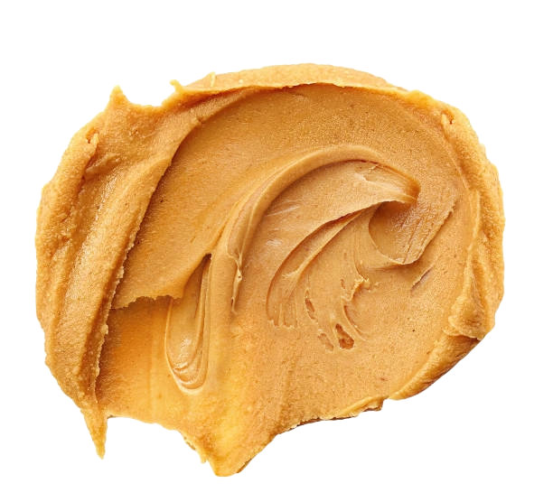
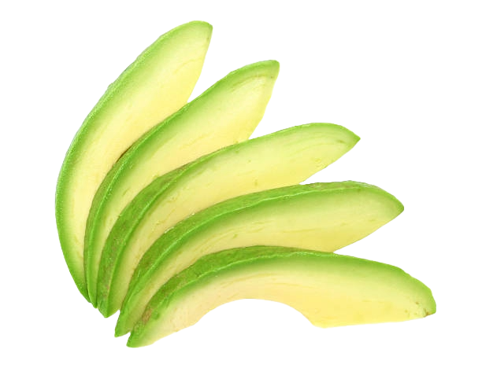
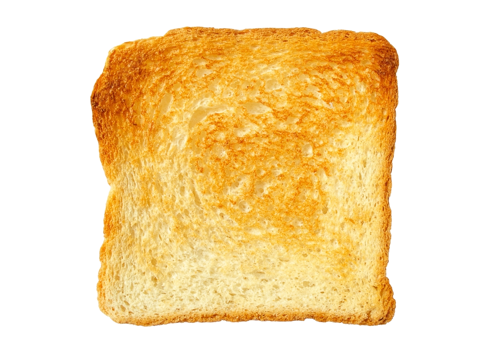
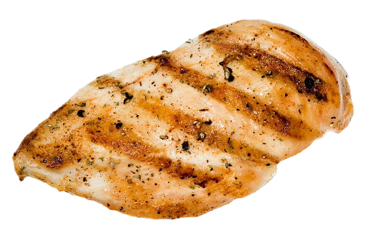
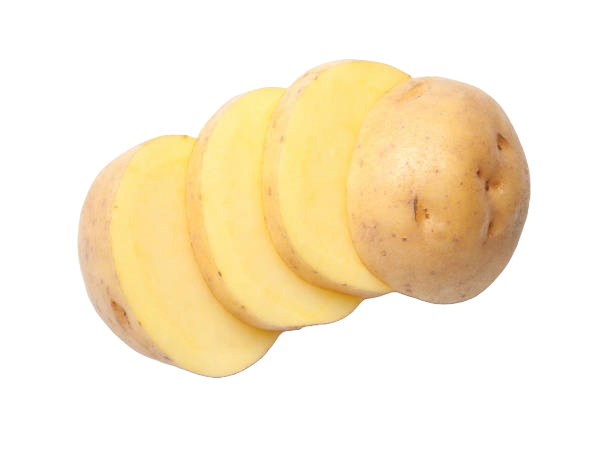

Should You Eat These Foods If You're Prediabetic?
By Owen Yang, Berlen Zhang, Sohan Raval, Christian Guerra
Almost 98 million Americans (1/3 of all Americans) are prediabetic according to the
CDC.
Everyone knows that eating high sugary foods like cookies, ice cream, and drinking soda further detriments one's diabetic
condition. But do you know about the seemingly healthy foods that spike your glucose levels and puts you at further risk
for Type II diabetes? Continue below to see if you are eating any of these common seemingly healthy foods and beverages that potentially put prediabetic individuals
at greater risk of Type II diabetes! (For Best Functionality, Please Switch Your Browser To Google Chrome!)
Please Select 4 Foods Or Drinks You Think Are Good For Prediabetics
The macronutrients data below is obtained from the food log of 16 prediabetic individuals
from BIG IDEAs Lab Glycemic Variability and Wearable Device Dataset





How Much Your Glucose Spikes After Eating Each Food
The glucose and food data below is obtained from the food log and glucose logging data of 16 prediabetic individuals obtained
from BIG IDEAs Lab Glycemic Variability and Wearable Device Dataset
Foods that do not spike Glucose
This section lists foods that have a minimal impact on blood glucose levels, making them suitable for individuals
managing diabetes or those looking to maintain stable blood sugar levels.
Foods that do spike Glucose
This section highlights foods that can cause a rapid increase in blood glucose levels. These foods are typically high in simple sugars or refined carbohydrates and should be consumed in moderation,
especially by individuals monitoring their blood sugar.